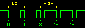
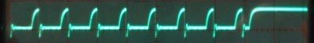
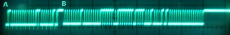
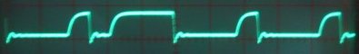

任天堂ゲームキューブ用コントローラーのピン配置
この文書について
この文書は，osa_kが Nintendo Gamecube Controller Pinout を翻訳したものです． この日本語訳における責任は，すべてosa_kにあります．なにか訳の間違いなどあったら，連絡してもらえれば幸いです．
任天堂ゲームキューブ用コントローラーのプロトコル
最終更新：2004年3月8日（最初のバージョンは2002年12月11日）
これは単なる技術文書です。 もしも技術的なことに興味がなく、ただ単にゲームキューブのコントローラーをPCに繋ぐ簡単な手段が欲しいだけであれば、 すでに出来上がっているアダプタを使うのが良いでしょう。そのアダプタは Skillz Cub Connection USB と呼ばれるもので、私の知る限りでは Lik-Sang社 だけが取り扱っています。 これは、任天堂純正のゲームキューブコントローラーにしか使えないようです（Wavebirdや他のサードパーティ製のコントローラとは互換性がないようです）。
もしも非公式なハードウエア解析や分解のようなものに興味があるなら、読み進めてください。
はじめに
GCコントローラーは、独自の6ピンコネクタとスクリーンケーブルによってゲームキューブと繋がっています。 純正のコントローラーはこのうちの5ピンしか結線しておらず、また、データ通信には1ピンしか使っていないようです。 この文書に書かれているのは、マルチメーターとオシロスコープによる実験と経験から推定したピン配置の説明です。 よって、この情報の正確性は保証しませんし、自分の責任で使ってください。これはあくまでも、私が 一番それらしいと思った 推論です:)
もしこのページに追加してほしい有用な情報がありましたら、私にメールをください（連絡先はindexにあります） 1 ．
James, 8th March 2004．
コネクタのピン配置
これはゲームキューブの前面から、ソケットを覗き込んだときの図です。番号付けは私のものです。

| ピン | 色 | J1 | 機能 |
|---|---|---|---|
| 1 | 黄 | 2 | 5V電源(振動モータが使用) |
| 2 | 赤 | 3 | データライン：双方向，3.43Vプルアップ |
| 3 | 緑 | 4 | グランド |
| 4 | 白 | 5 | グランド(Skillzでは3番ピンと4番ピンがグランドを共有しています) |
| 5 | - | - | 不明：純正品，Skillz共に結線されていません |
| 6 | 青 | 1 | ロジック用3.43V電源供給 |
| 7 | 黒 | 6 | ケーブルのシールド・グランド．大抵は3番ピンと共通 |
上の表は、一番左の数字が図のピン番号を表しています。 色は純正コントローラでのケーブルの色で（モデルによって異なるかもしれません）、5番ピンは使われていません。 3行目はコントローラー内部のコネクタに書いてあるピン番号です。特殊なねじ回しがあれば（もしくは即席の自作の道具があれば）見ることができます。 Lik-Sang社 から購入することもできます 2 ． 一番右の列は、それぞれのピンについて推測される機能です。
どのピンが自作インターフェースに必要？
私の試作品では、3番ピンと4番ピンを共通グランドとして、1番ピンには7805を用いて5Vを供給し、6番ピンには可変レギュレータで3.43Vを与えています。 他に結線しているのは2番ピンだけで、1Kのプルアップ抵抗を3.43Vラインとの間に噛ませています。 なお、Skillzのアダプターでは3.3Vのレギュレータを使っていたので、私の最初の設計ではやはり3.3Vを使うようになっていました。 おそらくここの正確性は大して重要ではないと思われます。 今の設計が3.43Vを使っているのは、ただ単にPAL 3 用のゲームキューブで計った数値だからという理由です。
注意： これは言うまでもないことですが、もしもケーブルにこれらの電源や抵抗を繋いだ状態でゲームキューブに接続すると、 なんらかのダメージを与える可能性があります。この注意をするのは、このようにケーブルを改造すると事故を起こしやすいからです。 まず最初にコントローラーを抜いておくことを絶対に忘れないでください。
電源供給と振動モーター
コネクタには、ロジック用と思しき3.43Vの供給と、振動モーターに使われている5Vの供給用（おそらくロジックにも使われています）の二つの電源ラインがあります。 3番ピンのグランドと7番ピンのシールドは一緒に接続してください。
モーターに使われる5Vは常にオンで、制御はコントローラーに送るコマンドで行います。 つまり、コントローラーはモーターのOn/Off切り替えのために電源用トランジスタを内蔵していて、コンソールから制御します。 黄色の5Vラインは直接モーターの+ve端子に接続されていて、-ve端子はトランジスタに繋がっているようです。
コントローラーに消費される電流はまだ計っていません。
シリアル通信
コントローラーは双方向のデータ線（2番ピン、赤）を使って通信します。 信号は3.43Vのアクティブ・ハイで、プルアップ抵抗によってHighを保ちます。Lowにするときは、オープンコレクタのトランジスタで引き下げます。 通信はコンソールから24bitのビット列をコントローラーに送ると始まり、コントローラーは64bitでボタンとスティックの状態を返します。
私は最初、コントローラーの内部にプルアップ抵抗が入っていると思っていたのですが（計測すると745Ωでした）、 実際には私の試作品では3.43Vラインとデータ線の間に1Kのプルアップ抵抗をはさんでいます。
通信速度は、4us/bitより 少し速い です。 Nintendo 64のコントローラーと同様に、Lowビットは3usのLowの後に1usのHigh、Highビットは1usのLowの後に3usのHighで表されます。 そう、まさにNintendo 64のコントローラーと同じです！

ゲームキューブ本体やコントローラーがビット列を送るときは、一つの（Highの）ストップビットで終わります。 つまり、00000000を送るためには、実際には000000001を送るということです。
タイミング計測
最初は（2003年12月時点での文書）、タイミングは5us/bitくらいだと思っていたのですが、それはオシロスコープの分解能が不正確だったために誤っていました。 Philipp Kastnerがストレージオシロスコープで計測したデータを送ってくれたのですが、そのデータでは4us/bitだったので、パラレルポートを用いて再計測することにしました。
パラレルポートを使って、通信の最初のHigh->Lowの立ち下がりから、コントローラーからの返答の最後のLow->Highの立ち上がりまでの時間を計測しました。 パラレルポートのサンプリングレートは1us/bitくらいで、誤差は±2usと考えられます。 10回連続して計った結果を平均すると、約348usでした。総ビット数が24+64=88bitとすると、3.95us/bitとなります。 ただし、コマンドを送信してからコントローラが返答するまでの時間は無視できるほど短いとしています。 このタイミングは、QueryPerformanceCounterをWindows2000、P4 2.8GHz、i875Pチップセットの環境で動かして得られたものです。
コントローラーの検出
コントローラーを挿していないとき、ゲームキューブは12ms毎に000000001を送ることでコントローラーを検出します。 下のオシロスコープの波形は、典型的な検出シーケンスを示しています（トリガーは立ち下がり）。 コントローラーを接続するとコントローラーがこれに返答するので、接続されたことを検知できます。 この最初の通信に何か有用な情報があるかどうかは、もっと調査が必要です（たとえば、どの種類のコントローラーが接続されたかなど）。

スティック・ボタンの取得
純正コントローラーが接続されているとき、典型的には約6ms毎に更新要求が来ます。 実際には、更新間隔はゲームによって調整でき、それはフレームレートで決まっているのではないかと予想しています。 データの更新は348us程で完了します。まずコンソールから次のような24bitのビット列を送ります。
0100 0000 0000 0011 0000 0010
この後、コントローラーはすべてのボタンとスティックの位置情報をビット列で返します。その意味は次の表の通りです。 ボタンは左から右に、送信順に並べてあります（一番左のビットが一番最初に送られる、ということです）。
+—————+——+——+——+———-+——-+——-+——-+——-+ | Byte 0 | 0 | 0 | 0 | Start | Y | X | B | A | +—————+——+——+——+———-+——-+——-+——-+——-+ | Byte 1 | 1 | L | R | > Z | ↑ | | ↓ | → | ← | | +—————+——+——+——+———-+——-+——-+——-+——-+ | Byte 2 | ステ | ィッ | クの | X座標(8b | it) | | | | +—————+——+——+——+———-+——-+——-+——-+——-+ | Byte 3 | ステ | ィッ | クの | Y座標(8b | it) | | | | +—————+——+——+——+———-+——-+——-+——-+——-+ | Byte 4 | Cス | ティ | ック | のX座標( | 8bit) | | | | +—————+——+——+——+———-+——-+——-+——-+——-+ | Byte 5 | Cス | ティ | ック | のX座標( | 8bit) | | | | +—————+——+——+——+———-+——-+——-+——-+——-+ | Byte 6 | Lト | リガ | ーの | 状態(8bi | t) | | | | +—————+——+——+——+———-+——-+——-+——-+——-+ | Byte 7 | Rト | リガ | ーの | 状態(8bi | t) | | | | +—————+——+——+——+———-+——-+——-+——-+——-+
上の表で、L/RボタンはL/Rトリガが完全に押し込まれているか否かを表します。また、AとLの間のビットは常にHighになっています。 最初の3つの0は、ボタン操作では変化しません（私は少なくとも000と001がここに入っているのを見たことがあります）。
振動
コマンドの最後のビットは振動の制御です。このビットを1にすると振動モーターがOnになり、0にすると止まります。初期化は必要ありません。 コントローラーを繋げた直後から、24bitのコマンドを送ってコントローラーの状態を得たり振動させたりできます。
その他の挙動
24bitのコマンドの中には、コントローラーのリセットや，接続されているコントローラーの種類を得るための命令を示す部分があるようです。 他のコマンドを見つけるには、もっと詳細な実験が必要と思われます。
以前はコントローラーがコマンドに応答する前に15usの遅れがありました。しかし、最近の実験では （以前とは違うコントローラーを使っています。おそらくコントローラーのバージョンで違うのでしょう）、この遅れはなくなっています。 これは、コントローラーの違いによるか、もしくはコントローラーへのコマンドの送信頻度によるものと考えています。 この遅れは、私が最初に実験した時ははっきりと出ていて、後に示す写真で見ることができます。
Skillzのアダプタの出力を調べているときは、L/Rトリガーからは4bitのデータしか返ってきていませんでした。 これは検証する必要がありますが、コントローラーは4bitと8bitの両方の分解能をサポートしているようです。 しかし、8bitが取れるのに誰がわざわざ4bitを欲しがるんでしょう？よく分かりません。
オシロスコープではどのように見えるか
オシロスコープやロジックアナライザが使えない人のために、私の使い古したオシロスコープで取った不鮮明な写真を載せます。 この画像で、Aは24bitのコマンドを送信し始めた点で、Bは64bitの返答の初めの点です。画質は非常に悪いですが、個々のビットは見て取れます。 また、コマンドと返答の間に遅れがあることが分かります。最近の実験では、この遅れは無くなっています。

最後に、これが0100を送信したときの波形の拡大図です。

非公式インターフェース
以前、実験のために簡単な非公式インターフェースを作りました。 このインターフェースは、純正コントローラーから全部のボタン、スティック、L/Rトリガーの値を読めました（DOL-003とコントローラーの下部に書いてあります）。 サードパーティのコントローラー（MadCatz MicroCon）でも試しましたが、これは動きませんでした。 しかしこれは、回路やタイミングのちょっとした調整でなんとかなると思います（有り体に言ってしまえば、このときはダメダメな実装でした）。
とにかく、コントローラーと会話できたし、振動させることもできました。さて、もっといい点は？そう、ソースコードがダウンロードできます。
試作ソフトウエア
まず初めに、これはWindows2000で開発されています。そして、今のところはi875チップセット上のP4 2.8GHzでのみ動作を確認しています。 幸いなことに、これは最低必須環境ではありません。が、遅いPCでタイミングを計ったときに、実際より長い時間を計測しても不思議ではありません。 もしもそういう現象が起きたら連絡してもらえれば、直せるかどうか調べてみます。
私がこれをリリースするのは、電子工作やソフトウエアの基本的な知識を持つなるべく多くの人に実験してもらいたいからです。 これはまだ実用にはできていません。つまり、汎用ドライバなどはありません。
このソフトを使うに当たって必要なのは、
- 手作りのハード（回路図は間もなく公開しますが、待ちきれない人や剛の者のために、ソースコード中にピン配置が書いてあります）。
- giveio デバイスドライバ
- 鋼の精神：PCやコントローラーが壊れる危険を厭わない気構え :)
このプログラムは、パラレルポート上のダイレクトI/Oで動きます。 通常この操作はWindows NT/2000/XPでは許可されていないので、 giveio というドライバをインストールしてください。 ぐぐればすぐに見つかります（すぐにリンクを張りたいと思います）。 これはインストールされると（管理者権限が必要です）、プロテクトを破ってダイレクトI/Oを叩けるようにします。
一度 giveio をインストールすると、要求されたとき自動的にgiveioサービスが立ち上がり、有効化されます。 つまり、Windowsが起動するときに立ち上がるよう設定しなくてもいいということです（また、そうすることは安全性の観点から推奨しません）。
Windows 95/98ではテストしていません（まだ使ってる人いるの？）。そして、もしもWin95/98で完全に動くのであればとても驚きです。もし動いたら教えてください。
最後に、これがソースコードです。
これはMS Visual Studio .NETのコンソールプロジェクトとしてコンパイルしています。たぶんVC++6でも動きます。 MS独自の構文のインラインアセンブラを使っていますが、他のコンパイラ用に書き直すのは簡単でしょう。
次にやること
最初にやるべきことは、ハードウエアを改良して、いろいろなPCでテストすることです。最小必須環境としては、P3 1GHzあたりを見ています。 ソフトウエアも改良が必要です。ハードウエアと対話するためのカーネルモードのデバイスドライバと、ジョイスティックとして扱うためのDirectInputドライバが必要です。 二つ以上のコントローラーが使えるとなお良いです。今のシフトレジスタは2入力なので、二つ目のコントローラをサポートするのはそう難しくないでしょう。
Philipp KastnerとPICマイコンを使ったインターフェースができるかどうか議論しました。これは、シリアルやUSBインターフェースの開発を可能にします。 一つの障害は、USB機能のあるPICは紫外線でメモリを消去するものしかない（フラッシュメモリのものは無い）ということです。 また当然ですが、不幸にも誰もがPICプログラマーを持っているとは限りません。 しかし、PICを使えば一つのインターフェースで複数のコントローラーが扱えるはずです。ゲームキューブみたいに、4ポートのパネルが作れればどんなにいいことか・・・。
そして、PCの古いゲームがあれば・・・。でも退屈な古い3人称視点シューティングはお断り。
クレジット
長いこと放置していたこの研究を、もう一度行うきっかけをくれたPhilipp Kastnerに多大なる感謝を （この研究と、そしてもちろん、友達であるゼルダ、リンク、マリオには、多くの時間を割かせたことで非難を）。
シフトレジスタの設計は、Stephan Hans、Simon Nield、F.P.Earle他によって始められたNintendo 64コントローラー用インターフェースの プロジェクトが大いに参考になりました。ありがとう！
GC Linuxプロジェクトは間違いなく一見の価値があります。コントローラーのコマンド詳細のうち一部は、彼らの文書から頂きました（YAGCDで検索） 4 ．
去年からメールをくれた多くの人たち。全員の名前は覚えていませんが、古いメールが見つかったらみんな載せます！
配線や、ピカピカ光るライトや、至る所散らかった工具に我慢してくれたSaraにも感謝を :)
-
(訳注：日本ではホームセンターに行けば売っていると思います．もしくは秋葉原とか) ↩
-
(訳注： アナログテレビの規格 ) ↩
-
(訳注： Yet Another GameCube Documentation と思われますが、なぜか消えてるぽいです) ↩